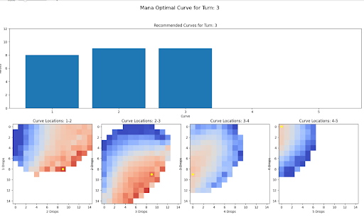
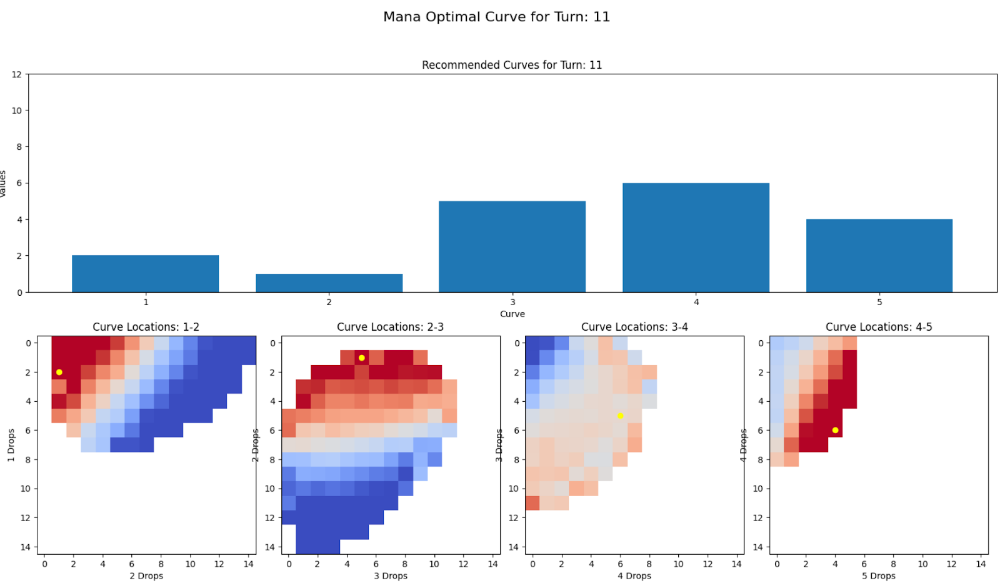

Synopsis
I created a ‘curve score’ metric that is able to describe a deck’s mana curve in terms of mana efficiency in a single metric. High values are related to early game mana efficiency and low values are related to late game mana efficiency. Here are 3 examples:
A. Brief Explanation of the Importance of Mana Curve in MTG Deck Building
Purpose of a Mana Curve
I consider the mana curve of a deck pivotal in optimizing mana efficiency during a game of Magic: The Gathering. A well-designed curve typically resembles a somewhat normal distribution of cards with varying costs, leaning slightly towards lower costs. It ensures that the number of cards at each mana cost aligns with the likelihood of drawing that cost during gameplay.
For instance, deck builders often include more two-mana cost cards than three-mana ones, and more three-mana cards than four. This decision is grounded in the desire to consistently access cards with lower costs earlier in the game, increasing the probability of drawing a two-mana cost card on turn two.
Mana Efficiency
Exploring a deck's mana curve and its influence on mana efficiency is a key interest. While the impact of the curve on a deck's ability to be mana efficient is apparent, quantifying the 'curviness' presents a challenge. Developing a metric to precisely identify the curve of a deck opens the door to isolating its effects on mana efficiency and delving into various other intriguing aspects of the game.
Mana efficiency of a particular curve is a product of game length. If a game is short, a curve with cheaper cards is more efficient due to the limited lands available. Conversely, in a longer game, a curve with more expensive cards becomes more efficient. Because of this extra dimension, we expect to see different curves be more or less efficient at different points in the game.
II. Mana Curve as a Vector
The mana curve of a deck can be conceptualized as a vector in a 5-dimensional space, with each dimension corresponding to different mana slots (one mana cards, two mana cards, three mana cards, and so on). This representation allows the entire mana curve to be uniquely defined as a point within this 5-dimensional space.
By taking 2-dimensional slices of this 5-dimensional space, a visual representation of the mana curve can be created. This process involves projecting statistical measures, such as win rate or mana efficiency, onto the mana curve space. These slices provide a comprehensive visualization, allowing for a more intuitive understanding of the deck's performance in relation to specific mana costs and aiding in the identification of strategic trends within the gameplay.
Above is a 2-D slice of this space. The color represents the win rate of decks when looking at how many two and three mana cards they have. This can be expanded to visualize the interaction of neighboring curve slots and their effect on some statistic (in this case, mana efficiency on turn 8).
III. Curve-Vector Representation and Mana Efficiency
Now that we have a mathematical and visual representation of a curve’s mana efficiency, we can examine efficiency at different points in the game.
- Note how the most efficient curves on turn three contain almost all one, two, and three mana cards. 
- Note how the most efficient curves contain almost no cheap cards and mostly expensive cards.
- Early and late game curves are almost exact mirror images of each other. Hot zones early become cold zones late.
IV. Representing Curve as a Single Metric
Since the early and late game curves are almost perfect mirrors of each other, I can represent a mana curve as a mean value of its efficiency scores in a specific heatmap. I have selected turn 4 as my heatmap of interest because it is the first stable graph and maps most closely onto the winningest curves up until turn 11. Here are some examples of curves and their ‘curve scores’:
Categorizing Decks by Mana Curve
Categorizing decks by their mana curve not only provides a framework for strategic analysis but also unlocks several compelling avenues for exploring different facets of Magic:
- Optimal Land Count: By understanding the mana curve of a deck, it becomes easier to identify the correct number of lands needed for optimal performance. Decks with lower curves might thrive with fewer lands to ensure a smoother draw, while those with higher curves may require a more robust mana base.
- Mana Base Impact on Efficiency: Exploring how different mana bases affect a deck's expected mana efficiency becomes a critical aspect of deck optimization. Analyzing the interplay between lands and the distribution of mana costs within a curve offers insights into creating balanced and reliable mana bases.
- Individual Card Impact: Categorizing decks based on mana curves allows for a more granular analysis of individual card impact within specific archetypes. Understanding how each card contributes to the overall curve dynamics helps refine deck-building choices and emphasizes the importance of card selection in achieving desired outcomes.
- Curve-Specific Archetypes: Further defining specific archetypes based on their mana curves enables a nuanced exploration of deck types. For instance, identifying archetypes with aggressive early-game curves, control-oriented mid-game curves, or ramp-focused late-game curves allows players to tailor their strategies to match the strengths and weaknesses of these archetypes.
In essence, the categorization of decks by mana curve introduces a multi-faceted approach to Magic: The Gathering exploration. It goes beyond surface-level analysis, providing a foundation for optimizing land counts, refining mana bases, and delving into the intricate details of individual card impact within specific archetypes. As players leverage these insights, the game evolves, offering new dimensions for strategic depth and innovation.